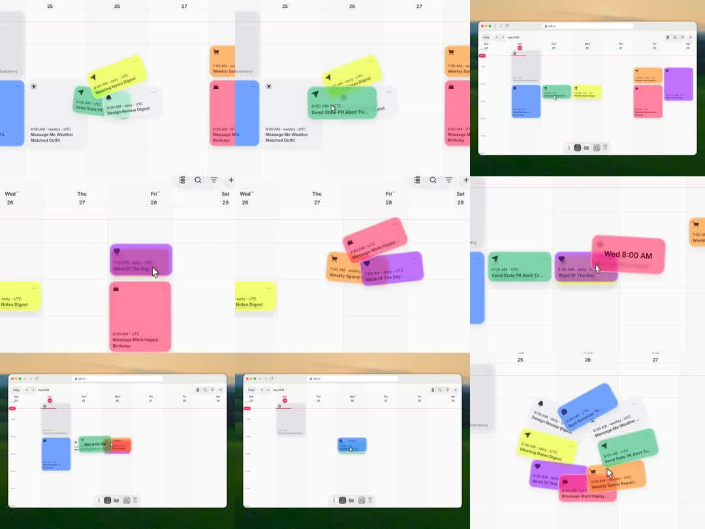

Media
Frame-by-frame

0-20%
Week grid (Wed 26 - Sat 29) with colorful event chips (yellow, green, purple, pink, orange, blue); hover lifts one chip slightly with shadow.
20-40%
Drag: grabbed chip scales ~1.05, rotates a few degrees matching cursor velocity, casts a large soft shadow; a dark time pill ('Wed 8:00 AM') floats above it; background events fade to ~50%.
40-60%
Chip travels across day columns; target slot shows a ghost outline; chip tilts opposite when direction reverses; nearby chips shift aside.
60-85%
Multi-select drag: 3-4 chips stack with slight rotational fan (-6deg..+6deg) like held cards, time pill on top; they swing as a group with lag.
85-100%
Drop: chip springs into the slot (small overshoot + squash), background restores, pill fades; single blue chip dropped alone in an empty day.